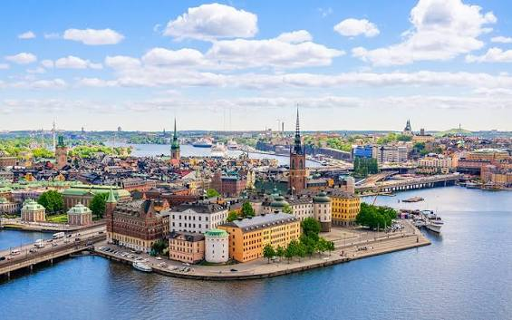

Місто у Швеції, яке я хочу побачити

Я мрію побувати в одному з міст Швеції через її природу. Для цього списку я обрав Стокгольм — місто, від якого можна почати знайомство зі шведськими краєвидами.
Чому я обрав Стокгольм
Мене приваблює природа Швеції, а розташування Стокгольма серед островів і води робить його особливо цікавим для майбутньої подорожі. Я ще не відвідував це місто.
Що хотів би побачити
- Старе місто Гамла Стан.
- Острови та набережні Стокгольма.
- Зелені зони й природу навколо міста.
Моя оцінка
Стокгольм посідає третє місце в моєму списку як місто-мрія. Найбільше мене приваблює можливість побачити природу Швеції.